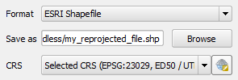

In the Save as vector layer as dialog, do:
-
Select ESRI Shapefile as the Format.
-
Type directly on the Save as field or use the Browse button to select the destination and filename of the file to create. Set the filename as
Wake_Fire_Stations_WGS84.geojson.
-
In the CRS field, select the destination CRS. The Wake_Fire_Stations layer is in the EPSG:2264 CRS. Set it to EPSG:4326 either using the drop-down menu or the Select CRS button to the right.

-
Enable the Add saved file to map option.
-
Click OK to create the new layer.
The new reprojected layer will load in the map canvas.
This step concludes the lessons. click Finish to end the lesson.